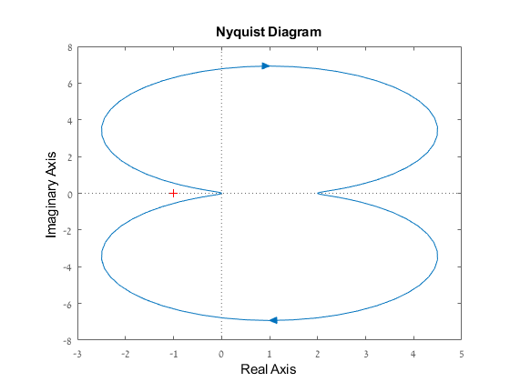
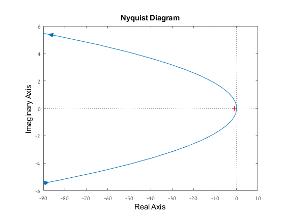
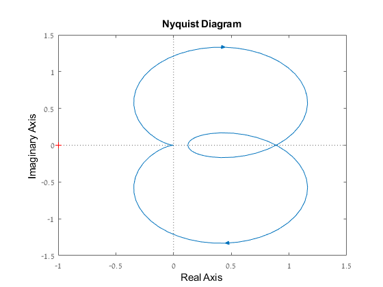
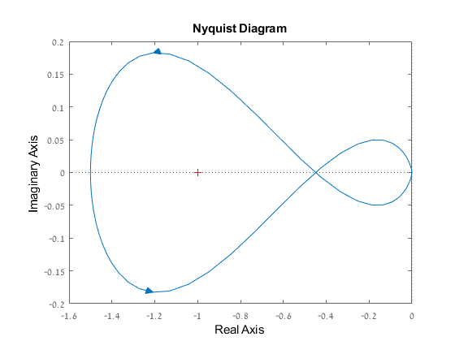
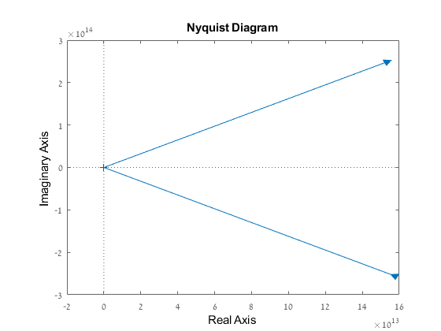

Contents
Student ID
ID_STUDENT_1 = 316098052; disp(ID_STUDENT_1)
316098052
1 Nyquist plot
1.1 Draw the Nyquist plot for the following systems:
%written by hand and attached at the end
%1.2 Draw the Nyquist plot for the following systems:
GH1 = tf([1 8],[3 1 4]);
nyquist(GH1)
 GH2 = tf([1 3],[1 0 0]); nyquist(GH2)
GH3 = tf([5 15],[1 -4 8]); nyquist(GH3)

GH4 = tf([2 1],[1 2.5 5 8]); nyquist(GH4)
1.3 Stability:
The Nyquist plot intersection with the real axis are at -2,0,2 for which
the values are:-1/120 and -1/400/
We encircle one pole in the s plane so we need to choose a k that will make
the plot in the w-plane to do one counter colockwise encirclement around
-1, so: -k/120<-1<-k/400 donates that 120<k<400
The nyquist plot displayed here is after stabilization
GH_1 = tf(1,[10 70 40 -120]);
syms w
s1=solve(imag((1)/(((1i*w)^3)+(7*(1i*w)^2)+(4*(1i*w))-12))==0,w);
r1_1=evalfr(GH_1,2i);
r2_1=evalfr(GH_1,-2i);
r3_1=evalfr(GH_1,0);
GH_1_s = tf(180,[10 70 40 -120]);
nyquist(GH_1_s)
 The Nyquist plot intersection with the real axis are at -4+i,4+i,0 for which
the values are:-5/90 and 1/50
The system has a pole at s=2, therefore we demand one encirclement of the left part around -1
so -5k/90<1 donates that k>18
The nyquist plot displayed here is after stabilization
GH_2 = tf([1 5],[1 3 -1 27 -90]);
syms w
s2=solve(imag((1i*w+5)/(((1i*w)^4)+(3*(1i*w)^3)-((1i*w)^2)+(27*(1i*w))-90))==0,w);
r1_2=evalfr(GH_2,(4+1i)*1i);
r2_2=evalfr(GH_2,(-4+1i)*1i);
r3_2=evalfr(GH_2,0);
GH_2_s = tf(20.*[1 5],[1 3 -1 27 -90]);
nyquist(GH_2_s);
